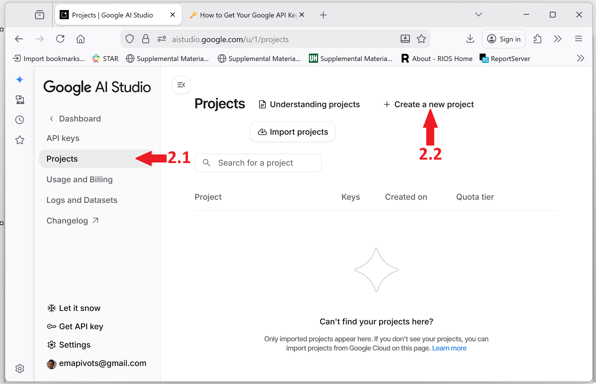
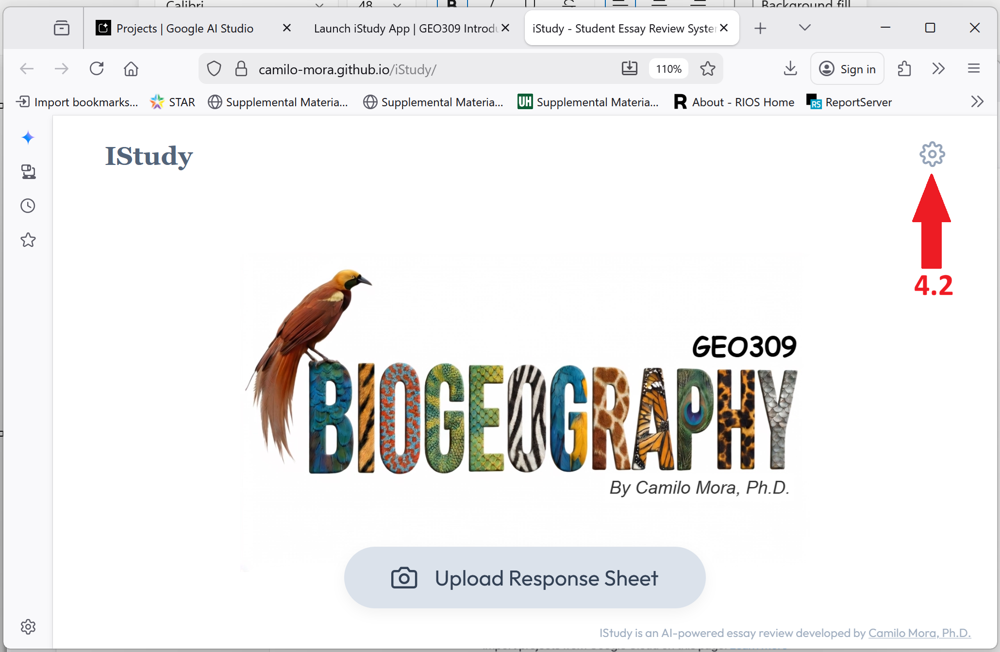

🔑 How to Get Your Google API Key
To use the iStudy app, you need a free Google AI API key. Follow these steps:
Go to Google AI Studio: Visit aistudio.google.com and log in with your personal Gmail account (UH emails do not work).
Create a Project:
- Click on “Projects” (top left).
- Click “+ Create a new project”.
- On the popup window, name your project “GEO309” and click “Create project”. 
Generate the Key:
- Click
Get API key(bottom left button). - Click
Create API key. - On the popup window, select the GEO309 project you just created.
- Click “Create key”.

- Click
Copy & Paste:
- Copy the generated key string.
- Go to the iStudy app, click the Settings (⚙️) icon, and paste your key, and save it.

Note: Ideally, generate 2 or 3 keys using different personal Google accounts and add them all to the app settings. This prevents “Quota Limit” errors during long review sessions.
Caution: If your Gmail account does not display the option to get an API key, it is very likely your account is from a restricted country. I am certain Gmail accounts created in the USA offer these keys.
You will do this only once, as the key(s) get saved in your local browser.